对于点亮OLED屏的一些思考
本篇文章主要记录在入门STM32过程中点亮OLED屏的一些思考。
0.96英寸OLED的相关细节
- 像素点阵规模：128x64（128列输出(SEG)，64行输出(COM)，共8192颗LED）
- 驱动IC：SSD1306
- OLED驱动方式：无源矩阵驱动(Passive Matrix, PM)，共阴极
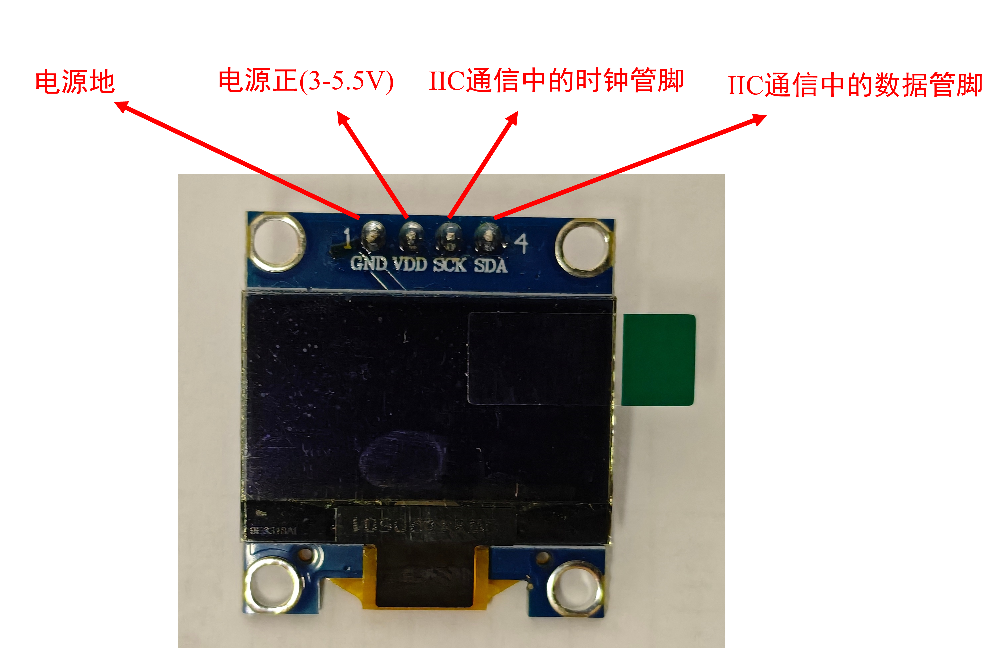
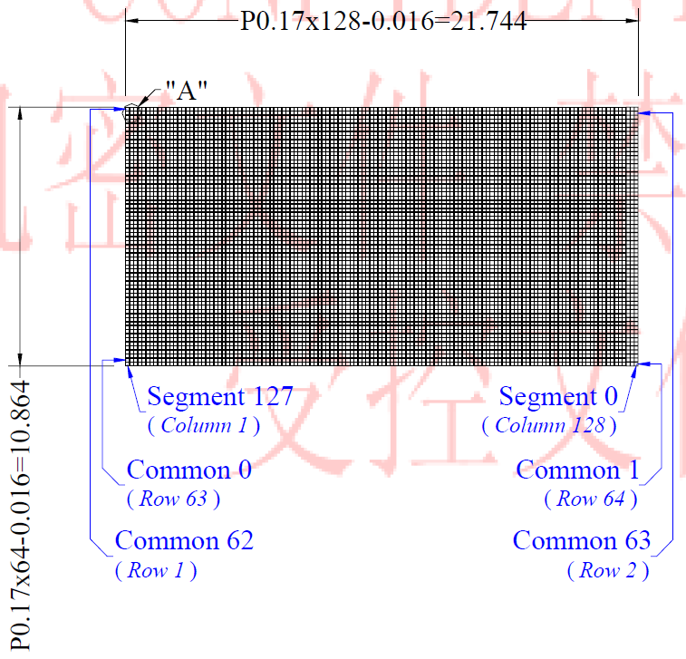
SSD1306驱动IC的相关细节
下图为SSD1306的内部结构图。观察该图可以发现，在SSD1306中存在着一个128x64bit大小的GDDRAM(Graphic Display Data RAM)。本质上，其就是一个SRAM。该SRAM中的每一个bit对应一颗像素点。如果显存中的某个bit为1，则它对应的那颗像素OLED被点亮，否则是熄灭的。
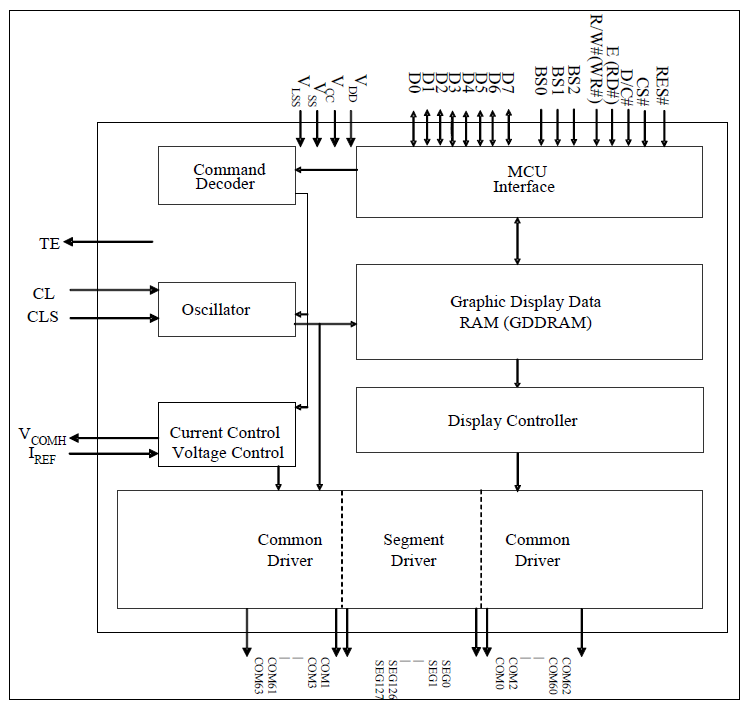
GDDRAM被划分为了8个Page(PAGE0-PAGE7)，一个PAGE中含有128个SEG。一个SEG中存放一字节的数据。低位在上部，而高位在底部。此外，通过改变寄存器配置可改变GDDRAM的行/列地址与OLED面板实际物理像素行/列的对应关系。如下图所示。
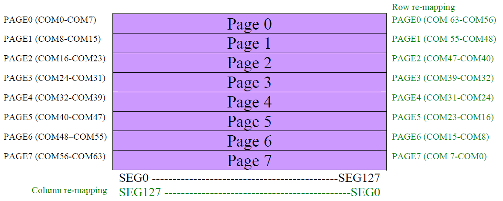
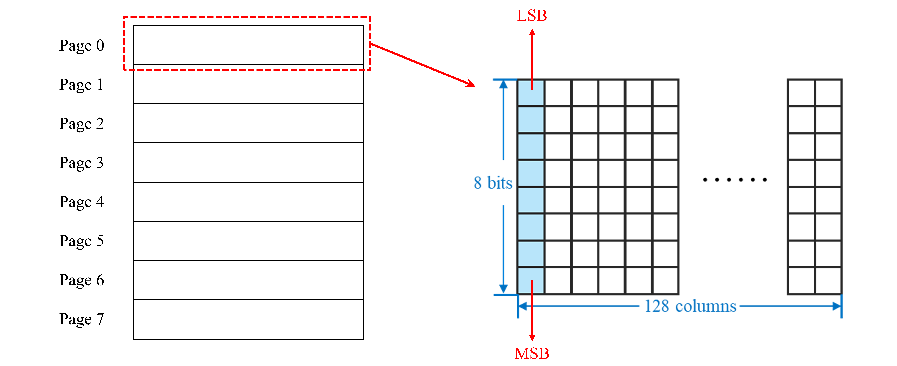
I2C介绍
概述
I2C(Inter-Integrated Circuit)利用两根线来进行串口通信。这两根线分别为串口数据线(SDA, serial data line)和串口时钟线(SCL, serial clock line)。I2C支持多个设备挂靠在传输总线上，并且支持多个控制器接受或发送数据。传输数据时通过设备地址来分辨究竟是哪一个设备参与I2C。
传输模式
I2C有多种传输速度模式，按照出现的先后顺序可分为如下的5种模式：
- Standard-mode: 100kbps(kbps即kilobits per second)
- Fast-mode: 400kbps
- Fast-mode Plus: 1Mbps
- High-speed mode: 3.4Mbps
- Ultra-Fast mode: 5Mbps
硬件结构
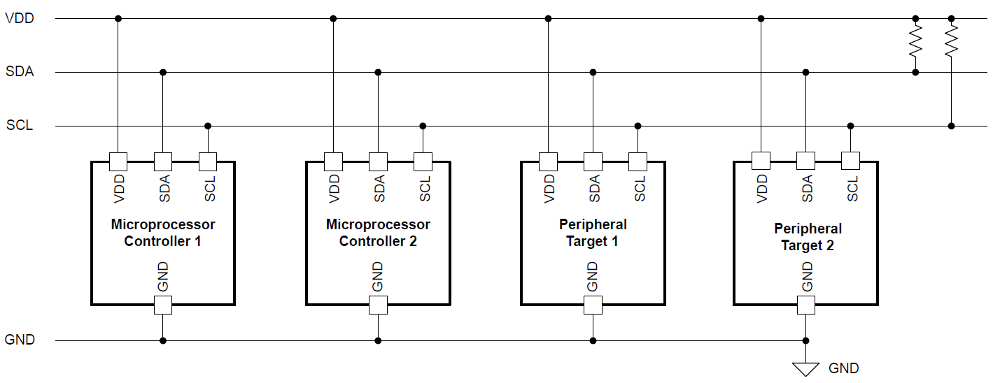
上图为一个典型的I2C通信的实施方法。SCL用于传输串口通信的时钟信号，而SDA用于传输串口通信的数据信号。在一个时刻，只有总线上的一个设备或控制器传输数据。I2C总线上所有设备的SDA和SCL引脚输出驱动都为开漏(Open-Drain)结构，通过外接上拉电阻实现总线上所有节点的SDA和SCL信号的线与逻辑关系，如下图所示。
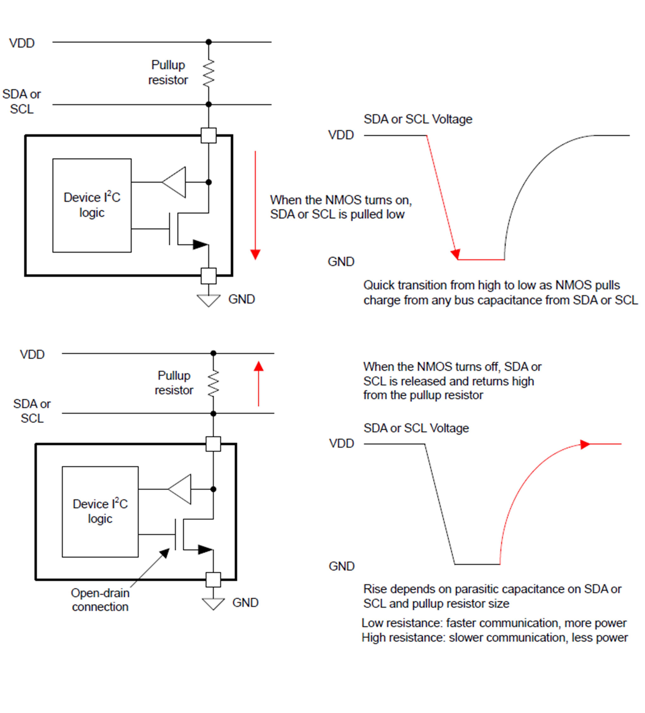
当NMOS开启时，SDA与SCL直接与GND相连，输出低电平。当NMOS关闭时，SDA与SCL被拉高至高电平。上拉电阻的存在使得SDA与SCL要么是高电平，要么是低电平。
下图显示了在I2C中使用开漏输出模式(Open-Drain Output)与推挽输出模式(Push-Pull Output)的对比图。
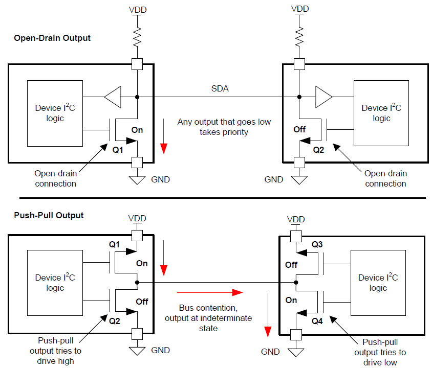
对于推挽输出模式，若在总线上活动的两个设备一个输出高电平，而另一个输出低电平，则会导致VDD与GND之间直接被短路。
通讯内容
I2C通信开始的信号是首先拉低SDA，然后再拉低SCL。而通信结束的信号是首先拉高SCL，然后再拉高SDA。如下图所示。
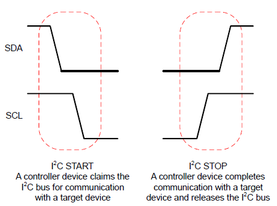
对于I2C通信的整个过程可使用如下的示意图简要的进行概括。首先拉低SDA，然后再拉低SCL。这是I2C通信开始的标志。随后，通过SDA传输7位从机的地址。需要注意的是SCL为高电平时，SDA上的数据必须保持稳定，以便接收方能够准确进行采样。SCL为低电平时，SDA线上的数据才允许发生变化，为下一个比特的传输做好准备。紧随者7位地址位的是读写位。该位表示读写的方向。该位为0时，表示写入从机。该位为1时，表示读取从机。在读写位后是应答位(ACK)，用以确认接受是否成功。当完成上述的操作后，开始传输数据。每一个数据帧为8位，同样在每个字节后都紧跟一个应答位(ACK)。数据传输时，高位在前。当完成数据传输后，首先拉高SCL，然后再拉高SDA，I2C通信结束。
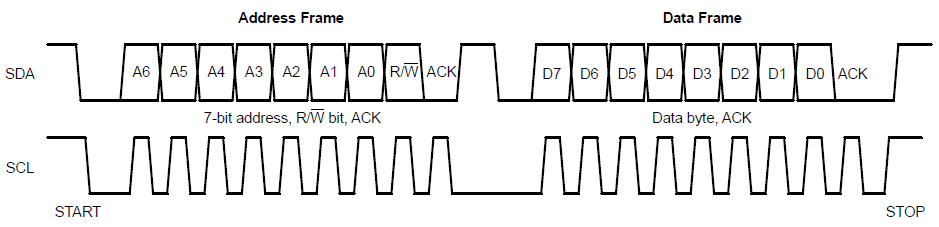
利用OLED屏进行显示细节
下图为OLED屏与STM32的连接示意图。在这之中，GND端口接B6端口，VDD端口接B7端口，SCK端口接B8端口，而SDA端口接B9端口。
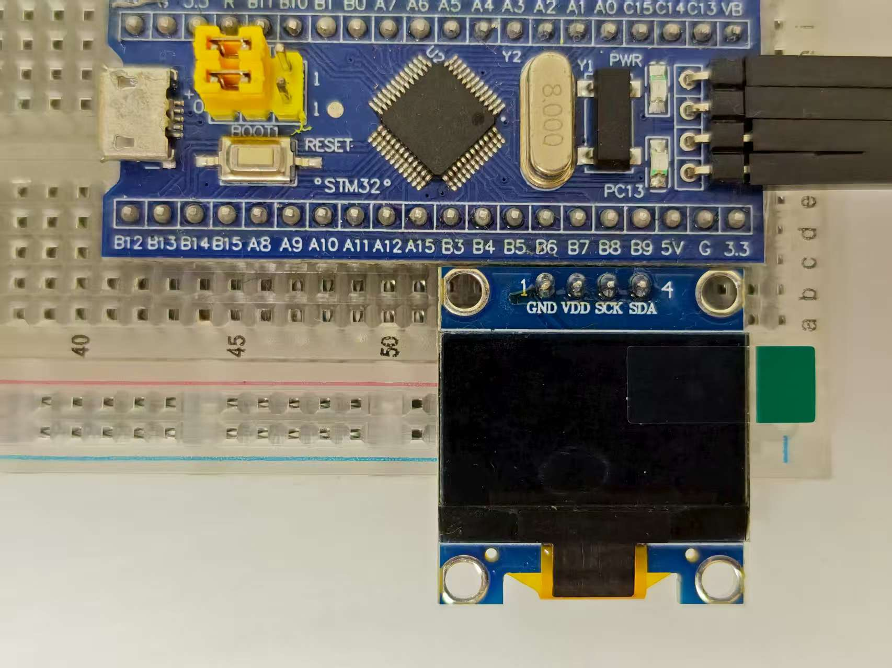
引脚初始化
#define OLED_W_SCL(x) GPIO_WriteBit(GPIOB, GPIO_Pin_8, (BitAction)(x)) // 设置或清除指定的数据端口位
#define OLED_W_SDA(x) GPIO_WriteBit(GPIOB, GPIO_Pin_9, (BitAction)(x))
void OLED_I2C_Init(void)
{
RCC_APB2PeriphClockCmd(RCC_APB2Periph_GPIOB, ENABLE); // 开启APB2外设时钟
GPIO_InitTypeDef GPIO_InitStructure;
GPIO_InitStructure.GPIO_Mode = GPIO_Mode_Out_OD; // 开漏输出
GPIO_InitStructure.GPIO_Speed = GPIO_Speed_50MHz; // 最高输出速率
GPIO_InitStructure.GPIO_Pin = GPIO_Pin_8; // 选中管脚
GPIO_Init(GPIOB, &GPIO_InitStructure);
GPIO_InitStructure.GPIO_Pin = GPIO_Pin_9; // 选中管脚
GPIO_Init(GPIOB, &GPIO_InitStructure);
OLED_W_SCL(1); // 拉高SCL
OLED_W_SDA(1); // 拉高SDA
}
I2C开始
void OLED_I2C_Start(void)
{
OLED_W_SDA(1); // 拉高SDA
OLED_W_SCL(1); // 拉高SCL
OLED_W_SDA(0); // 拉低SDA
OLED_W_SCL(0); // 拉低SCL
}
I2C结束
void OLED_I2C_Stop(void)
{
OLED_W_SDA(0); // 拉低SDA
OLED_W_SCL(1); // 拉高SCL
OLED_W_SDA(1); // 拉高SDA
}
I2C传输一个字节数据
void OLED_I2C_SendByte(uint8_t Byte)
{
uint8_t i;
for (i = 0; i < 8; i++)
{
OLED_W_SDA(!!(Byte & (0x80 >> i))); // 0x80: 1000 0000, 依次从高位开始提取出每一位
OLED_W_SCL(1); // SCL拉高，开始数据采样
OLED_W_SCL(0); // SCL拉低，数据采样结束，准备对下一位数据进行采样
}
OLED_W_SCL(1); //额外的一个时钟，不处理应答信号
OLED_W_SCL(0);
}
OLED写指令
void OLED_WriteCommand(uint8_t Command)
{
OLED_I2C_Start();
OLED_I2C_SendByte(0x78); //从机地址 0111 1000
OLED_I2C_SendByte(0x00); //写命令 0000 0000
OLED_I2C_SendByte(Command);
OLED_I2C_Stop();
}
- 从机地址在启动信号后的第一个字节开始传输。从机收到自己的地址后才能发送应答信号表示自己在线。模块的I2C从机地址为：0111 10 [SA0] [RW]。SA0是硬件地址选择位。当SA0接高电平时，地址中的SA0就是1，当SA0接低电平时，地址中的SA0就是0。模块出厂时，一般SA0是接低电平。RW为读写位。0表示写，而1表示读。
- 第二个字节传输控制字节。控制位的格式为：[Co] [D/C#] [000000]。通过控制字节中的D/C#位来确定接下来发送的一个字节是指令还是数据。发送指令该位为0，发送数据该位为1。当Co=0，并且D/C#=1时，接下来可以连续发送任意多个显存数据字节，直至产生停止信号。
- 第三个字节传输单字节指令/数据。
OLED写数据
void OLED_WriteData(uint8_t Data)
{
OLED_I2C_Start();
OLED_I2C_SendByte(0x78); //从机地址 0111 1000
OLED_I2C_SendByte(0x40); //写数据 0100 0000
OLED_I2C_SendByte(Data);
OLED_I2C_Stop();
}
- D/C#为0，代表传输的是指令相关的数据，主要用于改变屏幕的工作参数。
- D/C#为1，代表传输的是数据，主要用于显示数据。
设置OLED光标位置
// Y 以左上角为原点，向下方向的坐标
// X 以左上角为原点，向右方向的坐标
void OLED_SetCursor(uint8_t Y, uint8_t X)
{
OLED_WriteCommand(0xB0 | Y); //设置Y位置:0~7, 传入页地址
OLED_WriteCommand(0x10 | ((X & 0xF0) >> 4)); //设置X位置高4位:0~127，传入列地址
OLED_WriteCommand(0x00 | (X & 0x0F)); //设置X位置低4位，传入列地址
}
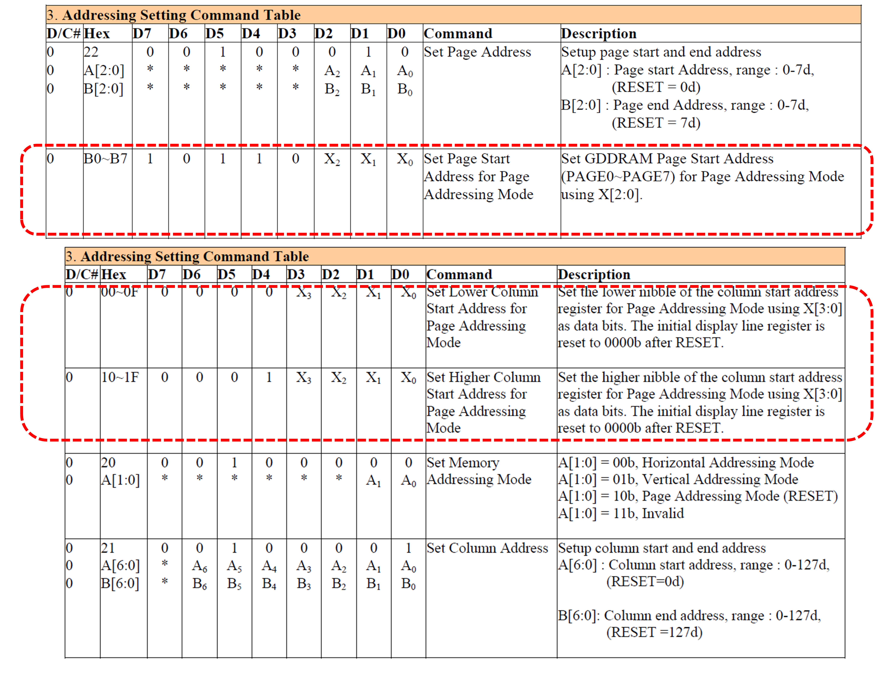
OLED清屏
void OLED_Clear(void)
{
uint8_t i, j;
for (j = 0; j < 8; j++) // 遍历每一行
{
OLED_SetCursor(j, 0);
for(i = 0; i < 128; i++) // 遍历每一列
{
OLED_WriteData(0x00);
}
}
}
OLED初始化
void OLED_Init(void)
{
uint32_t i, j;
for (i = 0; i < 1000; i++) //上电延时
{
for (j = 0; j < 1000; j++);
}
OLED_I2C_Init(); //端口初始化
OLED_WriteCommand(0xAE); //关闭显示
OLED_WriteCommand(0xD5); //设置显示时钟分频比/振荡器频率
OLED_WriteCommand(0x80);
OLED_WriteCommand(0xA8); //设置多路复用率
OLED_WriteCommand(0x3F);
OLED_WriteCommand(0xD3); //设置显示偏移
OLED_WriteCommand(0x00);
OLED_WriteCommand(0x40); //设置显示开始行
OLED_WriteCommand(0xA1); //设置左右方向，0xA1正常 0xA0左右反置
OLED_WriteCommand(0xC8); //设置上下方向，0xC8正常 0xC0上下反置
OLED_WriteCommand(0xDA); //设置COM引脚硬件配置
OLED_WriteCommand(0x12);
OLED_WriteCommand(0x81); //设置对比度控制
OLED_WriteCommand(0xCF);
OLED_WriteCommand(0xD9); //设置预充电周期
OLED_WriteCommand(0xF1);
OLED_WriteCommand(0xDB); //设置VCOMH取消选择级别
OLED_WriteCommand(0x40);
OLED_WriteCommand(0xA4); //设置整个显示打开/关闭
OLED_WriteCommand(0xA6); //设置正常/倒转显示 A6为1亮0灭，而A7为0亮1灭
OLED_WriteCommand(0x8D); //设置充电泵
OLED_WriteCommand(0x14);
OLED_WriteCommand(0xAF); //开启显示
OLED_Clear(); //OLED清屏
}
- 上电延时，确保OLED电源稳定。
- 关闭显示。发送命令
0xAE，使OLED进入休眠，防止初始化过程中出现杂乱像素。 - 设置时钟分频和振荡频率。首先发送命令
0xD5，然后再发送命令0x80。
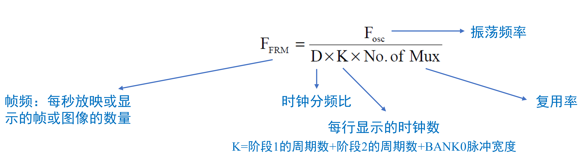
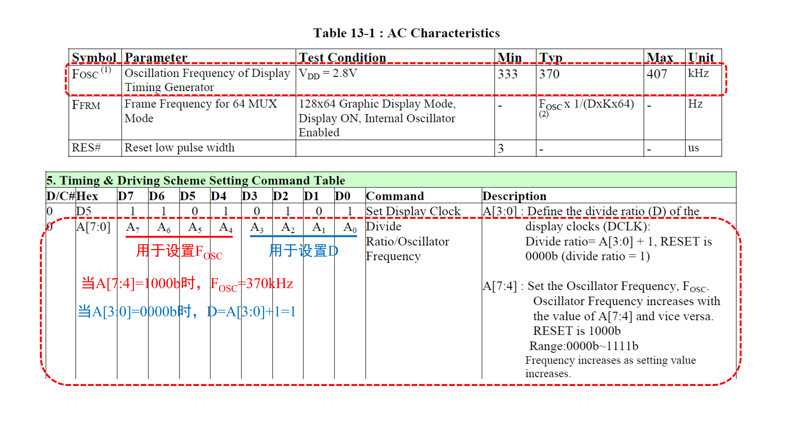
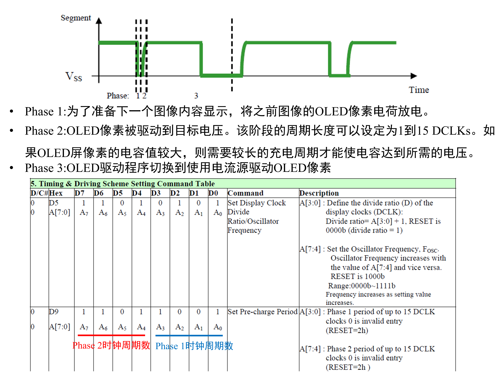
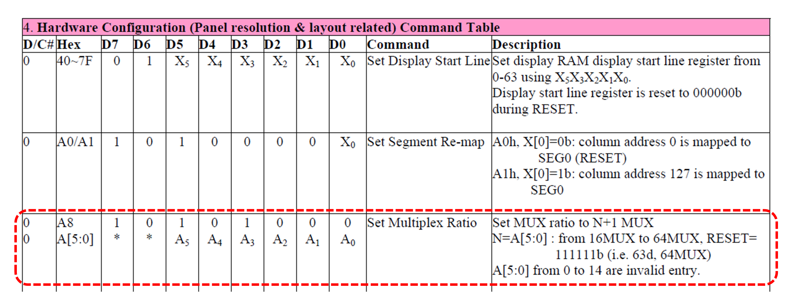
若按照默认值计算，则K=2+2+50=54。按照帧频的计算公式可以求得FFRM = 370k / (1x54x64) = 107.06Hz，也就是每秒扫描107次。
- 设置多路复用比。首先发送命令
0xA8，然后再发送命令0x3F。 对于128x64 OLED，高度为64像素，对应MUX比为0x3F（也就是63，表示驱动0-63行）。 - 设置显示偏移。首先发送命令
0xD3，然后再发送0x00，表示起始行偏移设为0。 - 设置显示开始行。发送命令
0x40。 - 列地址重映射。
0xA1正常，0xA0左右反置。 - 行地址重映射。
0xC8正常，0xC0上下反置。 - 设置COM引脚配置。首先发送命令
0xDA，然后再发送0x12。 - 设置对比度。首先发送命令
0x81，然后再发送0x7F(范围为0x00~0xFF)。可根据需要调亮或调暗。 - 设置预充电周期。首先发送命令
0xD9，然后再发送0xF1(在使用内部电荷泵时，0xF1是推荐值)。 - 设置VCOMH除数。首先发送命令
0xDB，然后再发送0x40。 - 整个显示开启。发送命令
0xA4 - 设置正常/反向显示。若发送命令
0xA6，则为正常模式(为1，则OLED亮，为0，则OLED灭)。若发送命令0xA7，则为反相显示。 - 启用电荷泵。首先发送命令
0x8D，再发送命令0x14。 - 点亮OLED，开始显示。发送命令
0xAF。
相关例子
单个汉字的显示
为理解OLED显示汉字的原理，首先使用matplotlib来模拟OLED发光。涉及到的Python函数代码如下(每个汉字字模的大小为16x16)：
import numpy as np
import matplotlib.pyplot as plt
import scienceplots
from matplotlib.ticker import MultipleLocator
plt.style.use(['no-latex','my'])
def Convert_array_China(data: list):
array_ls_1 = [] # 存储汉字的上半部分数据，即前16字节
array_ls_2 = [] # 存储汉字的下半部分数据，即后16字节
for d in range(0,16):
ls_1 = []
ls_2 = []
for i in range(8):
ls_1.append((int(data[d], 16)>>i)&(0x1))
ls_2.append((int(data[d+16], 16)>>i)&(0x1)) # 依次提取出每一位
array_ls_1.append(ls_1)
array_ls_2.append(ls_2)
return np.concatenate((np.array(array_ls_1).T, np.array(array_ls_2).T)) # 矩阵转置并堆叠
def Draw_China(data: np.ndarray):
fig, ax = plt.subplots(figsize=(4, 4))
ax.imshow(data, origin='upper')
ax.tick_params(top=True, labeltop=True, bottom=False, labelbottom=False)
ax.xaxis.set_major_locator(MultipleLocator(1))
ax.yaxis.set_major_locator(MultipleLocator(1))
for i in range(1,32,2):
plt.axhline(y=0.5*i)
for i in range(1,32,2):
plt.axvline(x=0.5*i)
plt.show()
ls = "0x00,0x80,0x60,0xF8,0x07,0x40,0x20,0x18,0x0F,0x08,0xC8,0x08,0x08,0x28,0x18,0x00,0x01,0x00,0x00,0xFF,0x00,0x10,0x0C,0x03,0x40,0x80,0x7F,0x00,0x01,0x06,0x18,0x00".split(",")
Draw_China(Convert_array_China([d.replace("0x", "") for d in ls]))
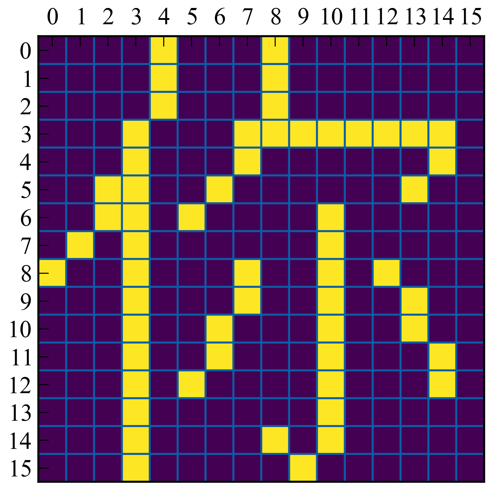
在上面的基础上，可通过下面的C语言函数实现OLED展示单个汉字。
/**
* @brief OLED显示一个中文字符
* @param Line 行位置，范围：1~4
* @param Column 列位置，范围：1~8
* @param Index 该中文字符在字模库中的索引值
* @retval 无
*/
void OLED_ShowCharChina(uint8_t Line, uint8_t Column, uint8_t Index)
{
uint8_t i;
OLED_SetCursor((Line - 1) * 2, (Column - 1) * 16); //设置光标位置在上半部分
for (i = 0; i < 16; i++)
{
OLED_WriteData(OLED_F16x16[Index][i]); //显示上半部分内容
}
OLED_SetCursor((Line - 1) * 2 + 1, (Column - 1) * 16); //设置光标位置在下半部分
for (i = 0; i < 16; i++)
{
OLED_WriteData(OLED_F16x16[Index][i + 16]); //显示下半部分内容
}
}
#include "stm32f10x.h"
#include "Delay.h"
#include "OLED.h"
#include <stdio.h>
int main(void)
{
OLED_Init();
OLED_ShowCharChina(2, 2, 0);
while(1)
{
}
}
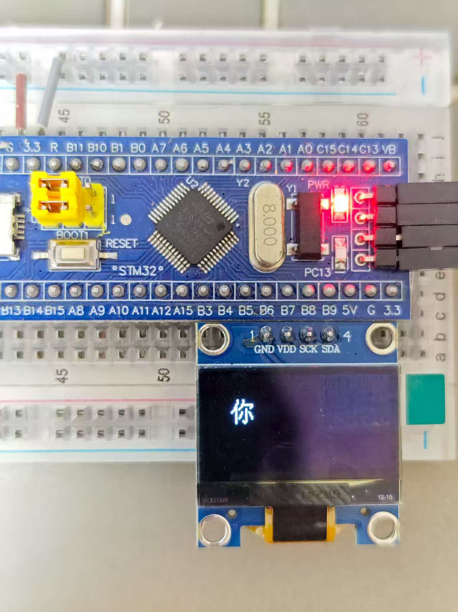
句子的显示
可通过下面的C语言函数实现OLED展示句子。
/**
* @brief OLED显示字符串
* @param Line 起始行位置，范围：1~4
* @param Column 起始列位置，范围：1~8
* @param Index 要显示的中文字符在字模库中的数组
* @param Len 数组的长度，范围：1~8
* @retval 无
*/
void OLED_ShowStringChina(uint8_t Line, uint8_t Column, uint8_t Index[], uint8_t Len)
{
uint8_t i;
for (i = 0; i < Len; i++)
{
OLED_ShowCharChina(Line, Column + i, *(Index+i));
}
}
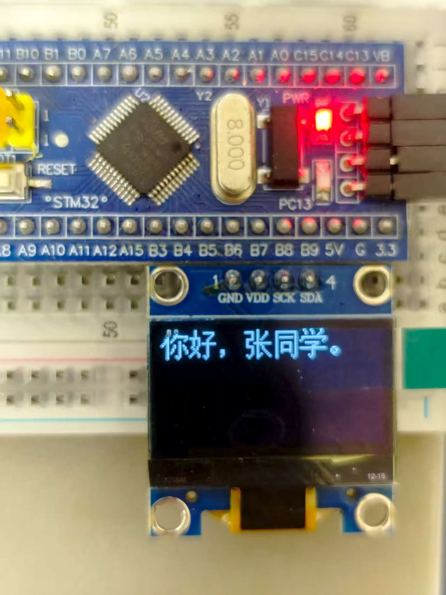